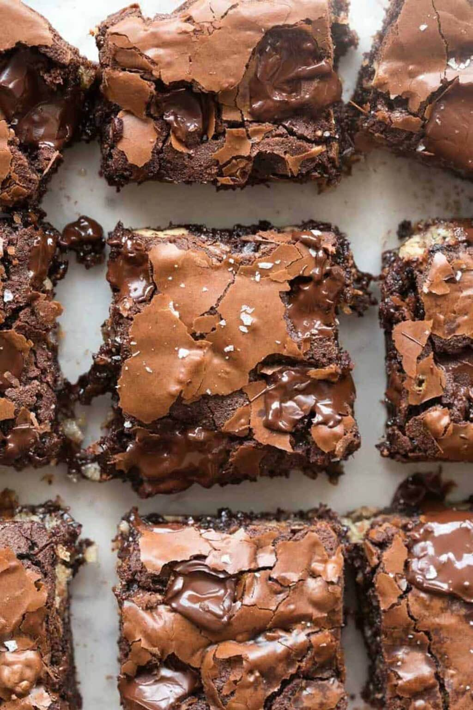

Vegan Brownies Recipe
Home

Description
After months of tweaking ratios and testing every dairy-free substitute
under the sun (spoiler alert: only a handful actually work), I finally
landed on a recipe that my readers (and my own taste testers) now call the
best vegan brownies ever.
Ingredients
-
Flax Eggs. My preferred egg sub for these brownies.
-
Black Coffee. Brewed and cooled. Instant coffee also
works.
-
Chocolate Chips. Skip the expensive store-bought kind
and make your own vegan chocolate chips.
-
Coconut Sugar. To sweeten the brownies and give them
gorgeous crackly tops! White or brown sugar also works.
-
Vegan Butter. I tested the four most popular vegan
butter substitutes on the market (Miyokos, Earth Balance, Violife, and
Kite Hill) and Miyokos was the clear winner- seriously, my partner and I
were fooled into thinking it wasn’t vegan.
-
Vanilla Extract. A must for any good brownie recipe!
-
All-Purpose Flour. Sifted to ensure there are no
clumps.
-
Cocoa Powder. Use unsweetened and natural cocoa powder.
Dutch-processed cocoa will also work, but sometimes, it can affect
whether the tops become crackly.
Steps
-
Combine the ground flaxseed with the brewed coffee. Let it sit for 10
minutes for a gel to form.
-
Whisk the sugar and butter in a large mixing bowl until smooth. Add the
vanilla extract, melted chocolate, and prepared flax eggs and whisk
until combined and glossy.
-
Mix the flour, cocoa powder, baking soda, and salt until just combined.
-
Bake the brownies for 27-30 minutes, or until a skewer comes out mostly
clean.